普林斯顿微积分读本–第1章:函数、图像和直线
Table of Contents
1.1 函数
函数的概念
函数是将一个对象 x 转化为另一个对象的规则, 比如 \(f(x)=x^2\) 就是一个函数
- x 被称为输入, 是来自称为 定义域 的集合；
- 返回的对象被称为输出, 函数的 实际输出值 构成了另一个集合: 值域 . 我们常用 y 表示函数的返回值，\(f(x)=x^2\) 又可以写作 \(y=x^2\)
- 一个函数必须给 每一个有效的输入指定唯一的输出 , 比如 \(\sqrt x\) ，x=4时，返回值可能为2也可能为-2，因此 \(\sqrt x\) 不是一个函数
一些函数的例子
- 例子1： \(f(x)=x^2\) 这个式子定义了函数 \(f\) ，它会将任何数变为自己的平方。
- 该函数 \(f\) 并没有规定定义域，因此默认定义域为 \(\mathbb{R}\) (所有实数的合集)
- 对于任意实数，\(f\) 将该实数变为变为其平方: \(f(2)=4\), \(f(-\frac{1}{2})=\frac{1}{4}\)
- 该函数 \(f\) 并没有规定定义域，因此默认定义域为 \(\mathbb{R}\) (所有实数的合集)
- 例子2： \(g(x)=x^2\) ， 定义域为非负数
函数 g 看上去和 函数 f 一样，但 实际上二者的定义域不同 ， \(f(-\frac{1}{2}) = 1/4\), 但 g(-1/2) 不存在。 g 和 f 有相同的规则，g 是限制 f 的定义域产生的。
值域
一个函数必须给每一个有效的输入指定唯一的输出，这个输出构成了值域, 值域是函数的输出集合.
例子
- \(f(x)=x^2\) 其定义域是 \(\mathbb{R}\) ，值域是非负集合， \(f(\sqrt 2)=4\) 和 \(f(\sqrt -2)=4\)
- g(x)=x2$ 其定义域为非负数集合，值域也为非负集合， \(f(\sqrt 2)=4\)
- g(x) 和 f(x) 的值域是相同的。
1.1.1 区间表示法
我们经常会遇到实数轴 R 的子集, 比如 {x : 2 ≤ x < 5} 这样的连通区间，我们通常 使用区间表示法 来表示这些范围：
[a, b]表示满足 a≤x≤b 成立的 x 的集合，比如[2, 5]就是所有满足 2≤x≤5 的x。x 的值可以取为a或者b,[a, b]这样的区间被称为 闭区间- (a, b) 则表示 满足 a<x<b 成立的 x 的集合，被称为 开区间
[a, b)表示 半开半闭区间
(a, ∞) 表示从a到正无穷大；(-∞, b) 表示从负无穷大到

1.1.2 求定义域
求函数的定义域分为2种情况：
- 函数的定义中包括定义域,比如: \(g(x)=x^2(x\ge 0)\)
- 定义域没给出时, 定义域包括实数集尽可能多的部分，比如 \(k=\sqrt x\) 定义域为 \([0, \infty)\)
常见几种限制定义域情况：
- 分母不为零
- 不能取一个负数或零的对数
- 不能取负数的平方根 (或四次根, 六次根, 等等).
例子：对于tan(x) 来说 tan(90°) 无意义，因为 \(\frac{sin(90°)}{cos(90°)}=\frac{1}{0}\)
例子1
\(f(x)=\frac{\log_{10}(x+8)\sqrt{26-2x}}{(x-2)(x+19)}\) ，求函数定义域
- 开平方根必须是正数，26-2x≥0，即x≤13
- 对数必须大于0， x+8>0，即x>-8
- 分母不为0，x≠2且x≠-19
- 定义域合起来就是
(-8, 13] \ 2
反斜杠表示 不包括
1.1.3 利用图像求值域
利用图形求解函数的值域：函数 \(F(x)=x^2\) 其定义域为 \([-2, 1]\)，现在 F 的值域是什么？
- 画出函数图像
- 想象从图像的左边和右边很远的地方朝向 y 轴水平地射入两束光
- 光会在 y 轴上有两个影子
- 值域就是影子的并集

1.1.4 垂线检测
并非平面上所有图形都是函数图像，函数图像的 坐标为 \((x, f (x))\) 。函数的 每一个有效的输入指定唯一的输出 ，因此对于任意x， (x, f (x)) 只有一个点，这就有了 垂线检测 这种方法: 任意一条垂线和函数只有有1个交点
例子1：\(x^2+y^2=9\) 不是函数
当 x 落在区间 (-3, 3) 上时. 对于这其中的任意 x 值, 垂线通过 (x, 0) 和圆相交两次，违反了 函数每一个有效的输入指定唯一的输出

- 例子2：上半圆方程 \(y=\sqrt{(9-x^2)}\) 和下半圆方程 \(y=-\sqrt{(9-x^2)}\) 可以通过垂线检测，是函数
例子3：下图也是一个函数，可以通过垂线检测

1.2 反函数
反函数的引入
对于一个函数 y=f(x) ，输入 x 得到 y。那反过来已知 y，有没有一个函数可以根据 y 求出 x ？
这个函数必须满足以下条件：
- y 必须在f(x)的值域中 ，否则就没有y满足f(x)=y
- 但可能有很多 y 值满足 f(x)=y ，比如 \(f(x)=x^2\) ，当 \(y=x^2=64\) 时 x 可以为 -8 或 8。但函数 每一个有效的输入指定唯一的输出 ，因此我们需要限制 仅有一个 x 值满足 f(x)=y
输入 y , 根据某个函数发现一个且仅有一个输入 x 满足 f(x) = y。 这个新的函数称为 f 的反函数, 写作 \(f^{-1}\)
反函数的定义
反函数 \(f^{-1}\) 的定义： 对于函数 f ，其值域中任意值 y ，都有 唯一 的 x 满足 f(x)=y 并且
- \(f^{-1}\) 的定义域和 f 的值域相同
- \(f^{-1}\) 的值域和 f 的定义域相同
- \(f^{-1}(y)\) 的值就是满足 f(x)=y 的 x
如果 \(f(x) = y\), 那么反函数 \(f^{-1}(y)\) = x
1.2.1 水平检测
求反函数时, 必须确定只有一个x值满足y=f(x) 即 (0, y) 的水平线和函数图像仅有一次相交, 交点为点 (x, y)。这样我们就有了 水平检测 这种方法。
本质还是对于反函数输入值y的输出值x唯一
水平线检验：
- 如果每一条水平线和一个函数的图像相交至多一次 => 函数有一个反函数
- 如果即使只有一条水平线和图像相交多于一次 => 函数就没有反函数
下图以 f(x)=\(x^3\) 和 g(x)=\(x^2\) 为例, 函数f有反函数, 函数g没有反函数

1.2.2 求反函数
求f的反函数：\(f(x)=x^3\)
求反函数的一般步骤
- 写下 \(y=f(x)\)
- 解出 x
具体步骤:
- \(y=x^3\)
- \(x=\sqrt[3]y\)
- \(f(y)=\sqrt[3]x\)
- 将y改为x，再加-1, \(f^{-1}(x)=\sqrt[3]y\)
反函数图像
求解反函数x并不简单,经常出现x无法求解的状况，但如果知道函数图像,很容易画出反函数图像
反函数图像与原函数图像的规律： 反函数是函数相对于y=x的镜像 ，如下图 \(f(x)=x^3\) 与其反函数

1.2.3 通过限制定义域得到反函数
求一个函数的反函数失败
- 失败原因: 对于相同 y 有多个 x 值
- 解决方法: 放弃所有其他值，只保留一个x。
这种方式称为 限制定义域
限制后的函数能通过水平检验：以 \(g(x)=x^2, x∈ [0, +∞)\) 为例，限制后的图像为：
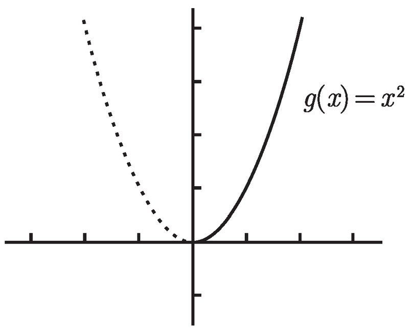
限制定义域后
- 取定义域\([0, ∞)\)
- \(y=x^2\)
- \(x=\sqrt y\)
- \(f^{-1}(x)=\sqrt x\) 定义域为 \([0, ∞)\)
- 反函数图像如下，关于 \(y=x\) 对称
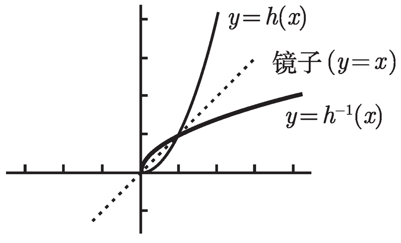
如果不限制定义域，\(y=x^2\) 关于 y=x 的图像如下，无法通过垂线检测，就不是反函数
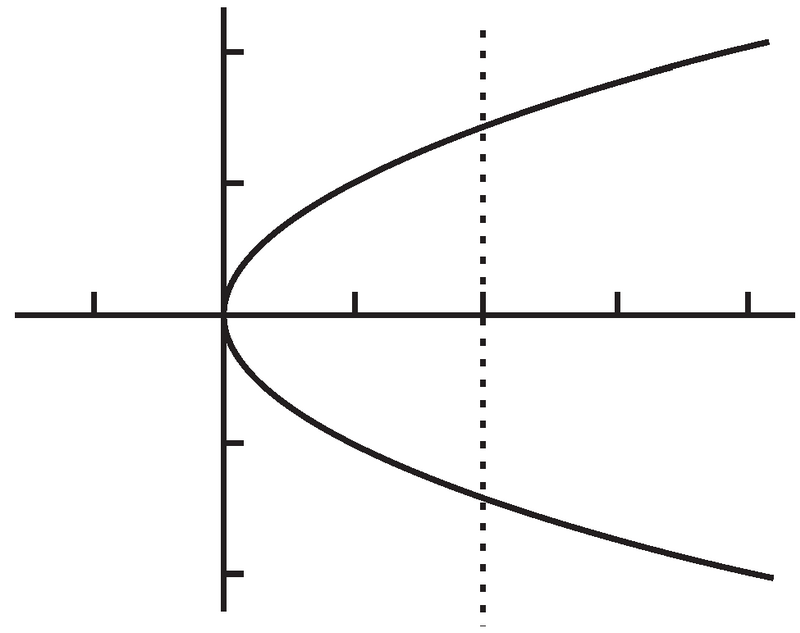
1.3 函数复合
函数复合概念
一个函数可以和另一个函数结合起来，被称为函数复合
- 函数复合：\(g(x)=x^2\) 中的x可被替换为任何有意义对象, 比如\(g(x^2)=(x^2)^2=x^4\)
- 函数h与g的复合写作 \(h(g(x))\) ， 也可以写作 \(h\circ g\) , 左边为外部函数,即 h(g(x))
- 例子：
- \(g(x) = x^2\) 中的 x 可以换为任何使函数有意义的值，比如 \(g(y) = y^2\) 和 \(g(x + 5) = (x + 5)^2\)
- \(h(x) = 3^x\) 中 x 换为\(x^2+6\) , 整个函数变为\(h(x^2 + 6) = 3^{x^2 +6}\)
- \(g(x) = x^2\) 中的 x 可以换为任何使函数有意义的值，比如 \(g(y) = y^2\) 和 \(g(x + 5) = (x + 5)^2\)
函数的复合并 不是把它们相乘. 例如 \(f(x) = x^2sin(x)\) ,这个函数并不存在函数先后关系和复合计算
练习1
\(g(x) = 2^x, h(x) = 5x^4, j(x) = 2x - 1\) , 求函数 f = g ○ h ○ j
\(f(x)=g(h(j(x)))=g(h(2x-1))=g(5(2x-1)^4)=2^{5(2x-1)^4}\)
练习2
将函数 \(f(x)=\frac{1}{tan(5log_2(x+3))}\) 分解为简单函数
- 从函数式中找到 x, 首先需要加 3, 所以设 g(x) = x + 3
- 然后要对所得值取以 2 为底的对数, 所以令 h(x) = log2(x)
- 接着需乘 5, 则设 j(x) = 5x
- 再接着要求正切值, 因此令 k(x) = tan(x)
- 最后要取倒数, 于是令 m(x) = 1/x
复合函数的图像
将函数 f 和 \(g(x)=x-a\) (a 是常数) 进行复合，得到新函数 \(h(x)=f(x-a)\) , 此时 h(x)的图像相对于f(x)有什么变化 ?
\(y=h(x)\) 和函数 \(y=f(x)\) 的图像一样, 只不过 \(y=h(x)\) 的函数图像向右平移了 a 个单位. 如果 a 是负的, 那么就是向左平移.
例子：如何画 \(y = (x - 1)^2\) 的图像:
\(y = (x - 1)^2\) 就像 \(y = x^2\) 的图像一样, 用 x-1 来代替 x. 将函数 \(y =x^2\) 的图像向右平移 1 个单位，如图：
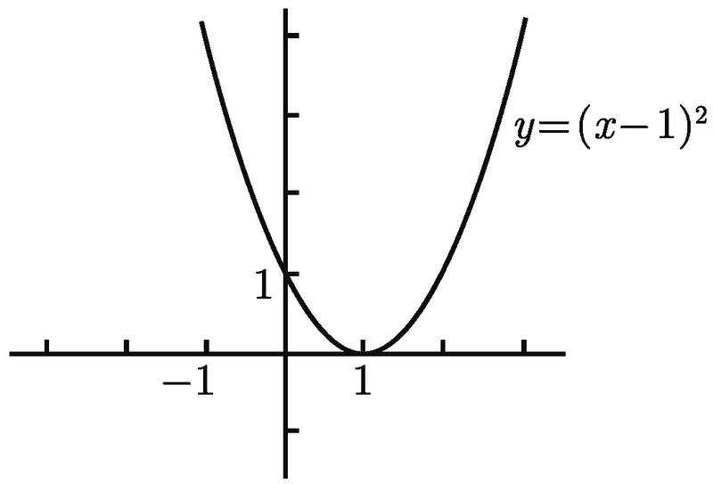
- 类似地, \(y = (x + 2)^2\) 的图像是将 \(y = x^2\) 的图像向左平移 2 个单位, 可以把 (x + 2) 理解为 (x - (-2))
1.4 奇函数和偶函数
概念
一些函数具有 对称性
- 比如 \(f(x)=x^2\), 随意取一个数x=3,那么f(3)=9, 而 f(-3)也等于9, 这类函数被称为 偶函数 。
- 而对于 \(f(x)=x^3\) 这类, 随意取一个数，f(-3)=-f(3) ，这类函数被称为 奇函数 。
- 偶函数: 对所有的 x, 有 \(f(-x) = f(x)\)
- 奇函数: 对所有的 x, 有 \(f(-x) = -f(x)\)
函数可能是奇的/偶的, 也可能非奇非偶.
- 大多数函数是非奇非偶的 .
- 只有一个函数是既奇又偶的, 它就是非常单调的对所有 x 都成立的 f(x) = 0(我们称之为零函数)
奇函数偶函数的图像
偶函数的图像关于 y 轴 具有镜面对称性
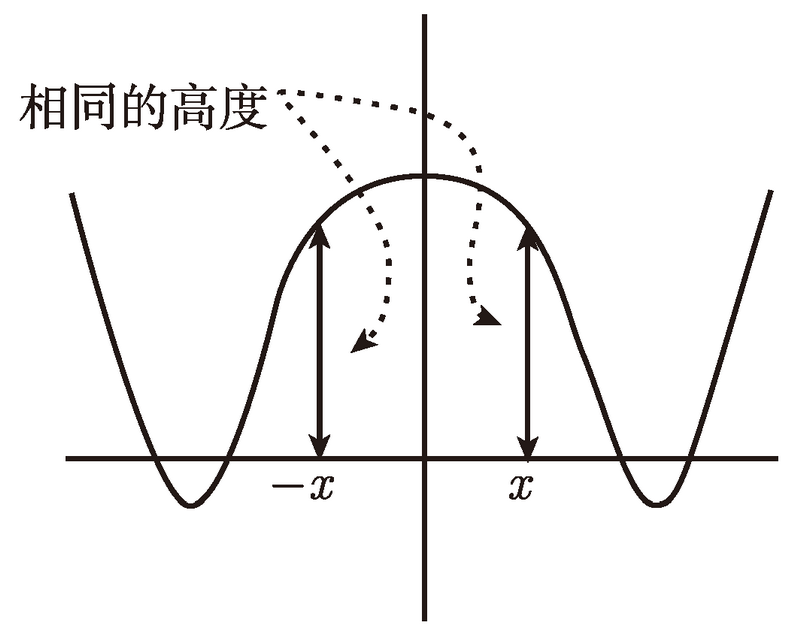
奇函数的图像关于原点有 180° 的点对称性, 图像在 x 坐标上方和 -x 坐标下方具有相同的高度
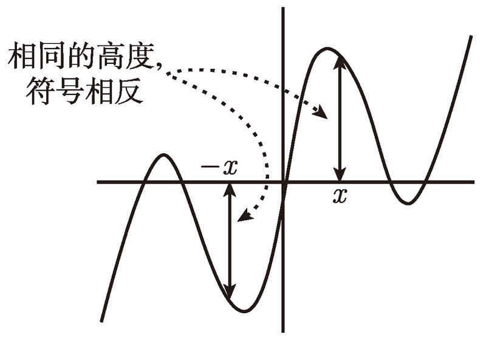
如何确定奇函数,偶函数
将每个 x 替换为 (-x) 并计算 \(f(-x)\)
- 如果得出f(x), f 就是偶的. 即 \(f(-x) = f(x)\)
- 如果得到 -f(x), f 就是奇的， 即 \(f(-x) = -f(x)\)
- 如果得到既不是 f(x) 也不是 -f(x), 则 f 就非奇非偶(或之前的化简不充分)
练习1
判断 \(f(x) = log_5(2x^6 - 6x^2 + 3)\) 奇偶性
\(f(-x)=log_5(2(-x)^6-6(-x)^2+3)=log_5(2x^6-6x^2+3)\) 等于 f (x) 本身, 因此函数 f 是偶的
练习2
判断奇偶性 \(g(x)=\frac{2x^3+x}{3x^2+5}\)
\(g(-x)=\frac{2(-x)^3+(-x)}{3(-x)^2+5}=\frac{-2x^3-x}{3x^2+5}=-g(x)\), g是奇函数
练习3
判断奇偶性 \(h(x)=\frac{2x^3+x-1}{3x^2+5}\)
\(h(-x)=\frac{2(-x)^3+(-x)-1}{3(-x)^2+5}=\frac{-2x^3-x-1}{3x^2+5}=-\frac{2x^3+x+1}{3x^2+5}\) 函数 h 是非奇非偶的
两个奇函数之积是偶函数
证明：
- 定义有两个奇函数 f 和 g，这两个函数的积为 h
- \(h(-x)=f(-x)g(-x)=(-f(x))(-g(x))=f(x)g(x)=h(x)\)，得证
1.5 线性函数
概念
\(f(x)= mx + b\) 这类函数叫做线性函数。它的图像是直线, 直线的斜率是 m 。如下图
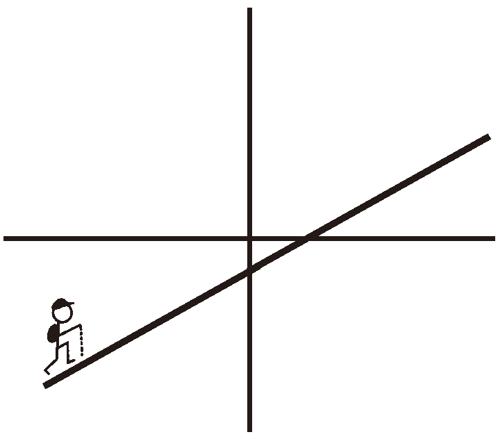
- m正数,线由左下向右上, m越大, 斜率越大, “上坡”越陡
- m为负数,图像由左上向右下, m的绝对值越大, “下坡”越陡
- m为0, 图像是一条水平的直线
两点一线
仅需确认两个点, 就可以画出线性函数的图像(两点一直线)
- 第一点：y 轴的截距。 令 \(x=0\) , \(y=m×0+b=b\) 所以直线通过 (0,b)
- 另一个点：我们可以选择 x 轴的截距。令 y=0, mx+b=0, \(x=-\frac{b}{m}\) 直线通过 (-b/m, 0)
这种方法有2种例外：
b=0, 此时函数变为 \(y=mx\)。 为求得另一点, 可以把 x=1 代入, 可得 \(y=m\).
所以直线 \(y=mx\) 通过 (0, 0) 和 (1, m) 这两点.
例如, 直线 y = -2x 通过原点和 (1, -2)，图像:
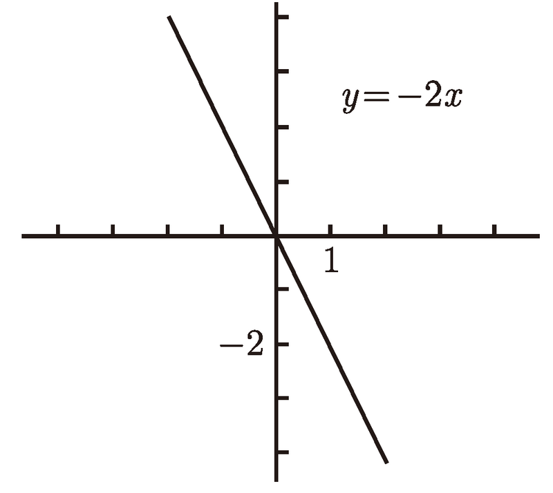
- m=0, 这时函数变为 y=b, 是一条通过 (0, b) 的水平直线
线性函数的点斜式
概念
假设你知道直线通过某一固定的点以及它的斜率, 那就能很容易求出它的方程，这个方程被称为 直线方程的点斜式
一条直线通过\((x_0, y_0)\), 斜率为m, 它的公式为 \(\frac{y-y_0}{x-x_0}=m\) ，这个式子被称为 点斜式
练习1
如果一条直线通过 (-2, 5), 斜率为 -3, 如何求它的方程？
方程为 \(y-5 = -3(x - (-2))\) , 化简后结果为 \(y=-3x - 1\)
根据2点求解线性方程
如果不知道直线的斜率, 但知道它通过哪两点. 那怎样求它的方程?
找出它的斜率, 再求出方程， 一条直线通过\((x_1,y_1),(x_2,y_2)\), 它的斜率为 \(\frac{y_2-y_1}{x_2-x_1}\)
练习2
通过 (-3, 4) 和 (2, -6) 的直线方程是什么？
- 求它的斜率： 斜率 \(=\frac{-6-4}{2-(-3)}=\frac{-10}{5}=-2\)
- 方程为 y-4=-2(x-(-3)), 化简后为 y=-2x - 2
1.6 常见函数及其图像
多项式函数
概念
基于 x 的非负次幂乘以实数, 可以 1、x、\(x^2\) 、\(x^3\) … 等为基本项, 用实数乘以这些基本项, 然后把有限个这样的项加到一起就是 多项式函数 , 比如:
- \(f(x)=5x^4-4x^3+10\)
- 多项式系数 ：基本项 \(x^n\) 的倍数叫作 \(x^n\) 的系数，其中\(x^4\) 系数为5, \(x^3\) 系数为-4, \(x^0\) 系数为10，\(f(x)=5x^4-4x^3+10\) 的系数分别是5 4 0 0 10
- 多项式次数 ：\(f(x)=5x^4-4x^3+10\) 中最大幂指数 \(5x^4\) 中的 4 被称为多项式的次数，该式被称为4次多项式。
- 多项式系数 ：基本项 \(x^n\) 的倍数叫作 \(x^n\) 的系数，其中\(x^4\) 系数为5, \(x^3\) 系数为-4, \(x^0\) 系数为10，\(f(x)=5x^4-4x^3+10\) 的系数分别是5 4 0 0 10
- 次数为 n 的多项式的数学通项公式: \(f(x)=a_nx^n+a_{n-1}x^{n-1}+…+a_2x^2+ax+a_0\)
图像
单个多项式函数的图像
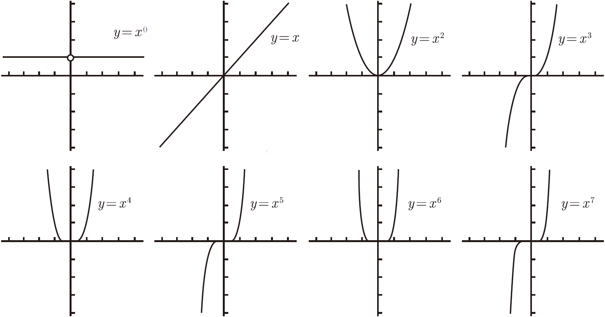
- 多项式函数图像
一般多项式的图像很难画，但 多项式的图像左右两端的走势 容易判断. 由 最高次数的项的系数(首项系数) 决定，多项式函数 \(f(x)=a_nx^n+a_{n-1}x^{n-1}+…+a_2x^2+ax+a_0\) 图像如下
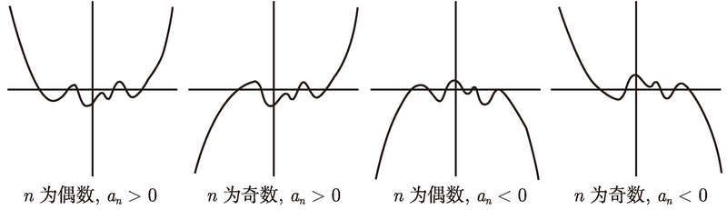
二次函数
概念
最高项为2的多项式函数， \(p(x) = ax^2 + bx + c\) (2次函数的系数我们更习惯写成这样，而不是 \(a_1\) \(a_2\))
二次函数的判别式
二次函数 \(p(x) = ax^2 + bx + c\) 有个判别式，根据判别式的符号可以判断二次函数到底有两个、一个还是没有实数解。这个判别式通常用符号 \(Δ\) 表示:
\(Δ = b^2-4ac\)
- \(Δ > 0\) 时，方程 有2个不同解
- \(Δ = 0\) 时，方程 有2个相同解
- \(Δ < 0\) 时，方程无解
二次函数的解
二次函数的解为 \(x = \frac{-b± \sqrt{b^2-4ac}}{2a}\)
- 有2个解时，解分别为不同的正负号，即 \(x_1=\frac{-b+ \sqrt{b^2-4ac}}{2a}\) \(x_2=\frac{-b- \sqrt{b^2-4ac}}{2a}\)
- 有一个解时为 \(x=\frac{-b}{2a}\)
二次函数的配平
2次函数的一个重要的技术是配平： 配平 \(2x^2-3x+10\)
\(2x^2-3x+10\) \(=2(x^2-\frac{3}{2}x+5)\) 提取2,使 \(x^2\) 的系数变为1
\(=2[(x-\frac{3}{4})^2+5-(\frac{3}{4})^2]\) 为了凑出一个 \((x＋a)^2\) 的形式
\(=2(x-\frac{3}{4})^2+\frac{71}{8}\) 将-3/4移出括号
有理函数
有理函数的概念: \(\frac{p(x)}{q(x)}\) 形式, p q为多项式, 它的图像根据p q变化而变化
- 有理函数例子1 最简单的有理函数：
- \(f(x)=p(x)\) 即分母为1, 多项式函数
或分子为1 \(f(x)=\frac{1}{x^n}\) (n为正整数)
- \(f(x)=\frac{1}{x^n}\) (n为正整数)的图像：
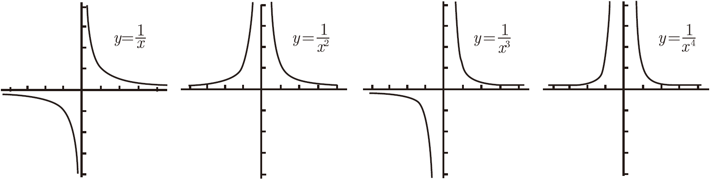
- \(f(x)=\frac{1}{x^n}\) (n为正整数)的图像：
- \(f(x)=p(x)\) 即分母为1, 多项式函数
指数函数
概念
\(y=a^x (a>1)\) .图像如下图(以 \(y=2^x\) 为例)
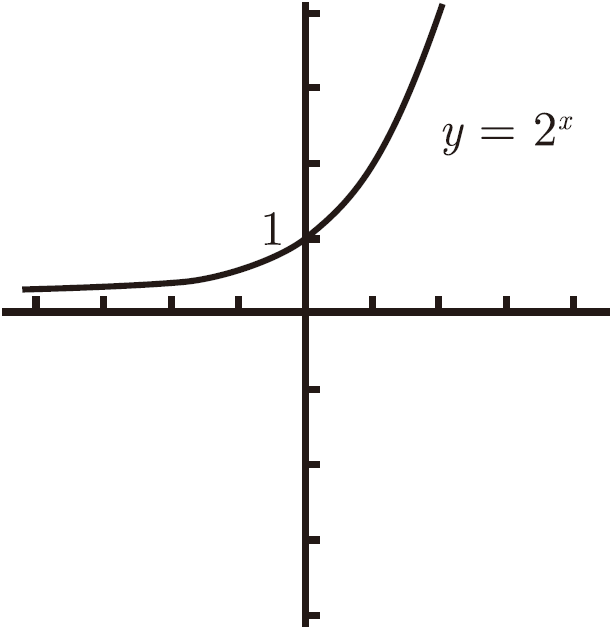
- 定义域为全体实数
- y轴截距为1, 因为 \(a^0=1\)
- 图形左端无限接近与x轴,但不会到达
指数为负数时, 图像相反
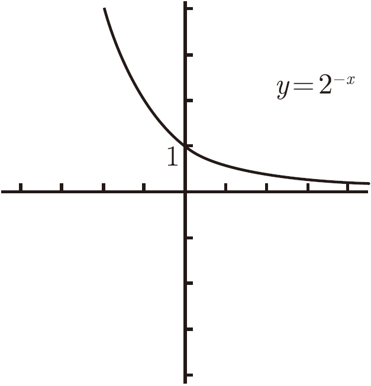
指数函数的底数为什么大于1
如果底小于 1, 情况会是怎样？
比如 \(y=\biggl(\frac{1}{2}\biggr)^x\) . 注意到 \(\biggl(\frac{1}{2}\biggr)^x=1/2^x=2^{-x}\) , 所以 \(y=2^{(-x)}\) 的图像也是 \(y=\biggl(\frac{1}{2}\biggr)^x\) 的图像, 因为对于任意 x, \(2^{-x}\) 与 \(\biggl(\frac{1}{2}\biggr)^x\) 均相等. 同理可得任何 y = bx(0 < b < 1) 的图像.
对数函数
指数函数的反函数就是对数函数，比如 \(y = 2^x\) 的 反函数是以 2 为底的对数函数 \(y = log_2(x)\) 以直线 \(y = x\) 为镜子, \(y = log_2(x)\) 如图：
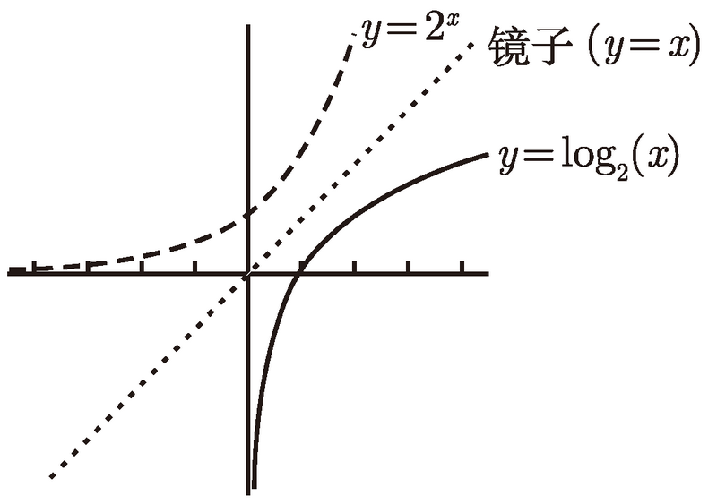
对数函数\(f(x)=log_a{x}\)
- 定义域 \([0, +∞)\) (负数和 0 不能求对数)
- 值域：全体实数
- y轴为渐进轴
绝对值函数
绝对值函数 |x|
带有绝对值的函数，表示数轴上 0 和 x 的距离
\[|x|=\left\{\begin{array}{c}x \\-x\end{array}\right.\]
绝对值函数 |x-a|
\(|x-a|\) 是数轴上 x和a 两点的距离
比如 |x - 1| ≤ 3 ， x 和 1 之间的距离小于或等于 3, 所有与 1 之间的距离不大于 3 的点，如下图
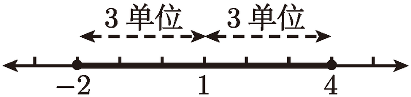
绝对值函数的图像
绝对值函数的图像是 以x轴以下的部分做关于x轴的镜像
例子：
y=|x|的图像
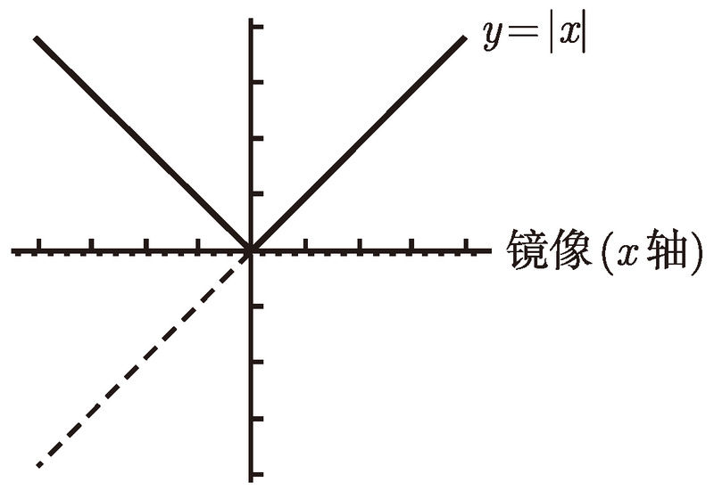
\(y = |log_2(x)|\) 的图像
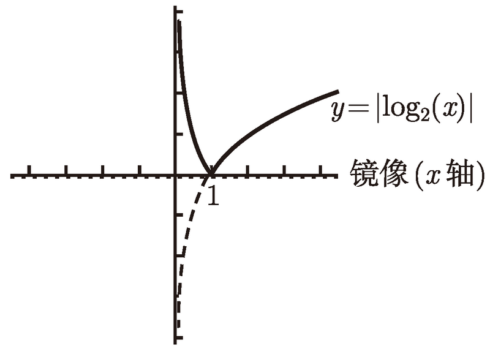